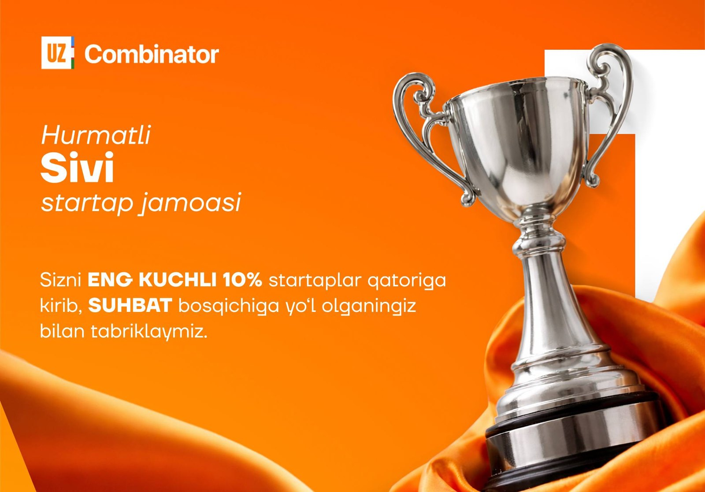

2026-01-10 · 3 min read
2026-01-10 · 3 min read
Job hunting in Uzbekistan is a mess, so we built Sivi

Looking for a job in Uzbekistan is hard, and it isn't because there are no jobs. The vacancies are all over the place: hh.uz, OLX, Telegram channels, company websites. If the words in your search don't match the words in the posting, you see nothing. And Telegram, where a lot of good openings get posted, has no real search at all.
What Sivi does
Sivi is a career agent inside Telegram. It collects thousands of vacancies from sites, platforms and channels and indexes them together with your resume. If you don't have a resume, it builds one from a few simple questions, and that works for a manager as well as for a tailor.
Then it matches the two by meaning instead of by keyword. The language you wrote in doesn't matter, and you don't have to guess the right buzzword. You just see the openings that fit.
Getting into UzCombinator
Sivi got into UzCombinator, in the top 10% of the startups they selected. That meant 45 days to build, test our assumptions with real people and get ready to grow. Thank you to UzCombinator and to Murodillo Ismailov for the chance.
Where it is now
It's free for now and I'm still building it. What I want most is honest feedback, especially on how accurate the matching is. If you know someone who is looking for work, send them to t.me/SiviAIBot or have a look at sivi.uz.